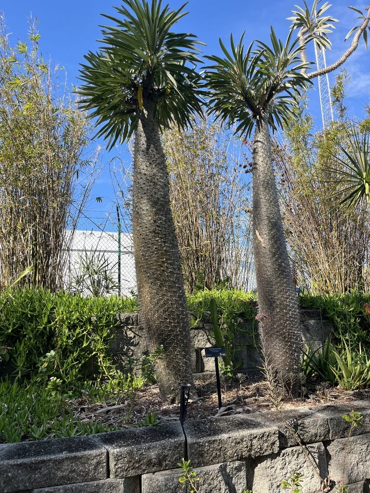

- Don't let the name fool you — the Madagascar Palm is no palm at all. It's a succulent with a fat, water-storing trunk, more closely related to milkweed and oleander than to any palm.
- That silvery trunk is armored with long, sharp spines arranged in spirals, with a tuft of strappy leaves crowning the very top — palm-like in silhouette only.
- It's a bit of a hidden gem here, tucked on the right side of the cactus garden near the Mahogany tree and Cypress Pond — a glorious quiet corner for a close look.
- Grown outdoors in the sun like ours, it can produce big, fragrant, white star-shaped flowers — a treat it almost never offers as a houseplant.
Endemic to southern Madagascar, where it grows in hot, dry, rocky terrain. 'Pachypodium' is Greek for 'thick foot,' describing the swollen, water-storing trunk that carries it through long droughts. One of the best-known of its genus in cultivation worldwide.
- The Madagascar Palm is a masterclass in mistaken identity. The crown of long narrow leaves atop a tall bare trunk gives it a palm-tree silhouette, but it is a caudiciform succulent — a plant that stores water in a swollen trunk (the 'caudex') — and it belongs to the Apocynaceae, the dogbane family.
- That makes it a closer relative of the park's Giant Milkweed, plus plumeria and oleander, than of any true palm. The Greek name Pachypodium, 'thick foot,' is all about that water-hoarding trunk.
- At Palma Sola it's one of the quiet treasures: tucked on the right side of the cactus garden, near the Mahogany tree and the Cypress Pond, in what is a genuinely glorious corner of the park for slowing down and observing.
- The whole pocket — cactus garden, pond edge, the big Mahogany — rewards a careful eye, and the Madagascar Palm is the kind of plant a visitor walks right past until someone points it out.
- It earns a close look but not a close touch. The silvery-gray trunk is studded with rigid spines (modified structures left where old leaves fall), arranged in neat spirals up the stem, and like its milkweed and oleander relatives the plant carries a toxic, milky latex sap.
- Grown outdoors in full Florida sun — unlike the leggy indoor specimens most people know — a mature plant can crown itself with large, fragrant, white, star-shaped flowers, something it almost never does as a houseplant.
As a non-native desert succulent far from its Madagascar pollinators, the Madagascar Palm offers limited wildlife value in Florida, though when it flowers its fragrant white blooms can draw bees and other insects to the nectar. Its formidable spines make it a poor browse target — which, paired with the toxic sap, means animals leave it alone.
Its main contribution here is as a living curiosity and a teaching specimen in a corner of the park built for observation, rather than as a wildlife resource.
only a few inches per year — from a stout caudex. Propagated from seed or by removing the offsets (pups) that form around the base of mature plants.
Silvery-gray, swollen and water-storing, covered in rigid spines arranged in spirals (the spines mark where old leaves have dropped). Rarely branches.
Long, narrow, glossy dark green, forming a crown only at the very top of the trunk; shed in winter dormancy and regrown in spring.
Large, white, fragrant, five-petaled and star-shaped, at the top of the plant — produced on outdoor, sun-grown specimens, rarely on indoor ones.
Milky, toxic latex throughout.
On the right side of the cactus garden near the Mahogany, find the tall silvery trunk bristling with spines and topped by a palm-like crown of leaves. Look for the spiral pattern of the spines climbing the stem, and in the warm season, the white star flowers up top. Admire it with your eyes and hands to yourself — those spines are no joke, and the sap is toxic.
Do not eat any part of this plant. Its milky sap — like that of its oleander and milkweed relatives — is poisonous if swallowed, causing nausea and vomiting, and it irritates skin and eyes.
The rigid spines also cause painful puncture wounds, so look, don't touch, and wear gloves if you must handle it.
It's toxic to dogs too, the sap poisonous if ingested and the spines a real hazard to curious pets. Most animals avoid it because of the spines, but keep dogs away.
PARK CONTEXT (Randy): A hidden gem on the RIGHT side of the cactus garden, near the Mahogany tree and Cypress Pond. Randy considers this whole pocket a glorious area for visitor observation/learning; wants to develop it (cycads desired for the area but not yet observed/added). Confirmed in iNaturalist (research-grade).


- © elurding (CC-BY-NC), via iNaturalist
- © Maria Escobar (CC-BY-NC), via iNaturalist
- © Ruby Meador (CC-BY-NC), via iNaturalist
- © Randall Carter (CC-BY-NC), via iNaturalist